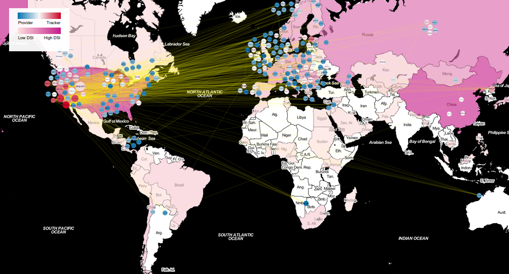
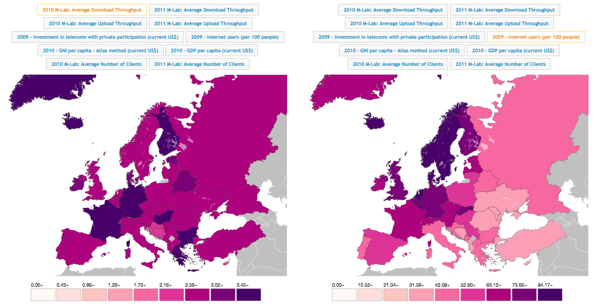

I have participated in all editions of the EU Hackathon, a series of events organized by the European Parliament and Google in Brussels. In the last two editions, I teamed up with my two great friends Luca Chiarandini and Diego Sáez-Trumper. We were "Team Bodoques".
2013 Edition (Data Sovereignty Project)

We developed a metric named data sovereigny as the quality of having independent authority over citizens' information. In the visualization we can observe how user data flows across important and popular websites, which are geolocated to the countries their servers lie in. We highlight those sites that track users through a tracking score.
2012 Edition (Eye Time Project)
Our project was a Chrome browser extension (plus server side logic and processing) that allowed children to monitor their Web usage. In particular, Web usage of learning websites allowed children to spend more time online. Parents were able to understand the Web browsing habits of their kids. We won the Children Safety Track.
2011 Edition (Ananke Project)

Solo participation. In this edition, I explored the differences in geographical distribution of variables related to internet quality in Europe, along features extracted from The World Bank. Here is feedback written about the visualization (source):
Eduardo has an obvious awareness of data visualization fundamentals and best practices, and for the hackathon he developed a working prototype as well as two mockups of interactive visualizations meant to support data exploration and decision making. Like Team Ferioli’s entry the prototype incorporates economic indicators, displaying World Bank statistics alongside M-Lab data. The difference (aside from data source) is how comparisons are made. Instead of placing a bubble over each country on a single map, two map views are displayed in parallel, a user-selectable variable displayed on each. The different approaches have different strengths. The single map with bubbles makes discrepancies such as those described above stand out and be found more quickly, and doesn't require moving your eyes back and forth between maps. On the other hand, I find it easier to spot geographic trends within individual variables with Eduardo's approach, without the bubbles disrupting the visual flow. Also, props to Eduardo for choosing a colorblind-friendly colour palette. I don't know whether it was a conscious decision but it is an important consideration, often overlooked by visualization developers.